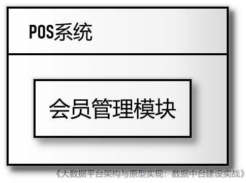
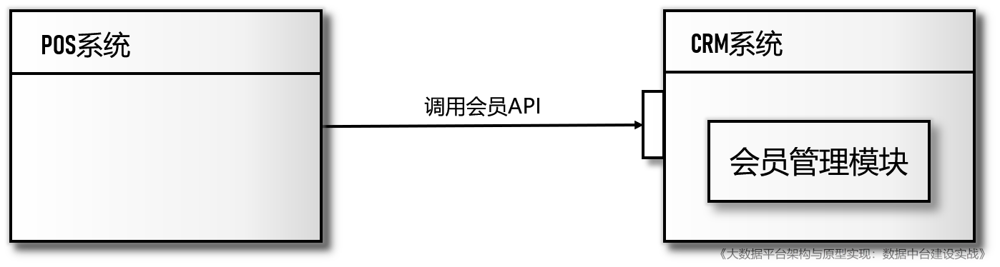
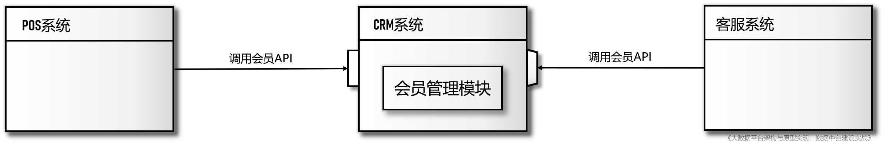
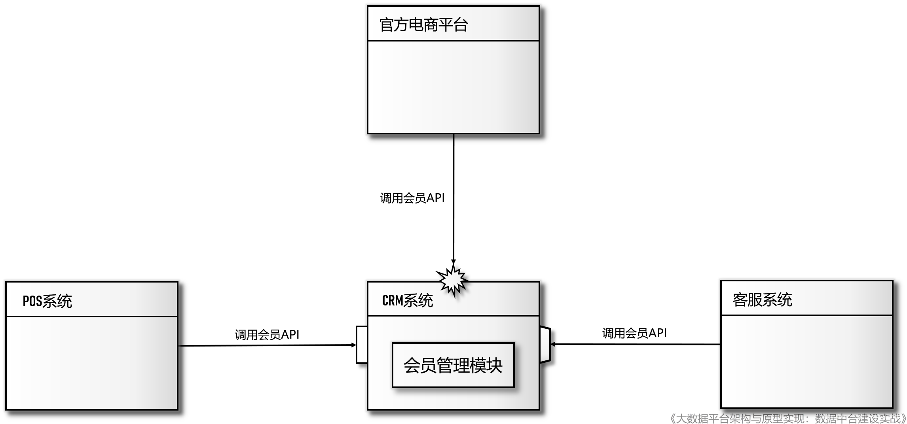
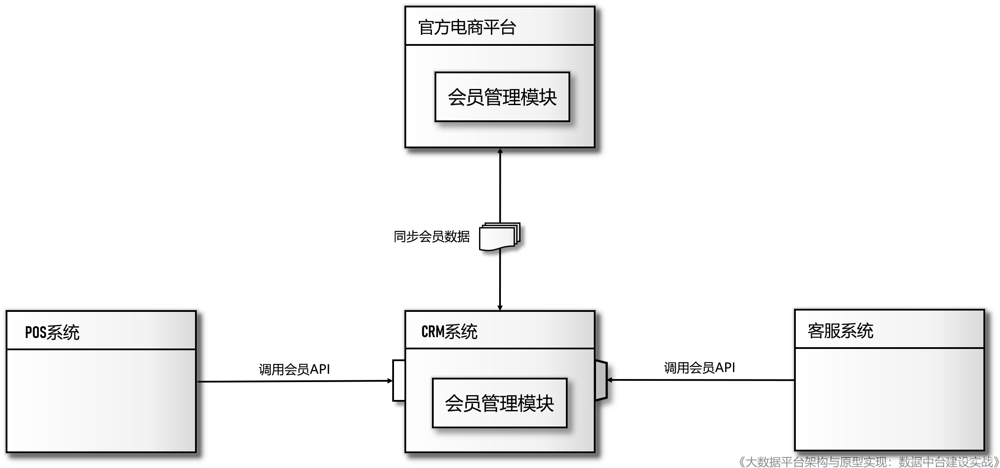
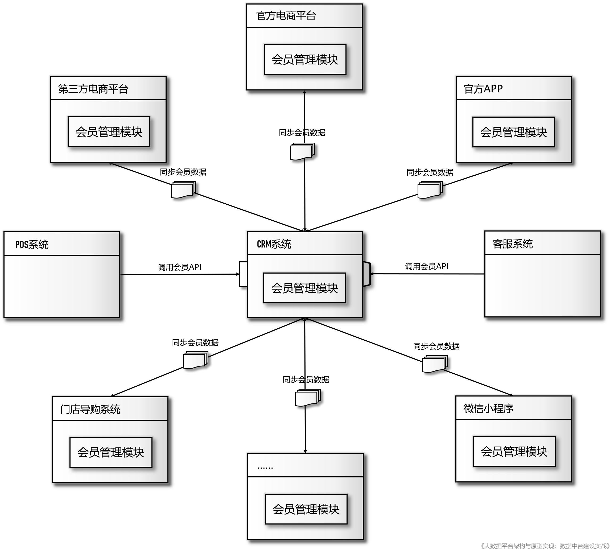
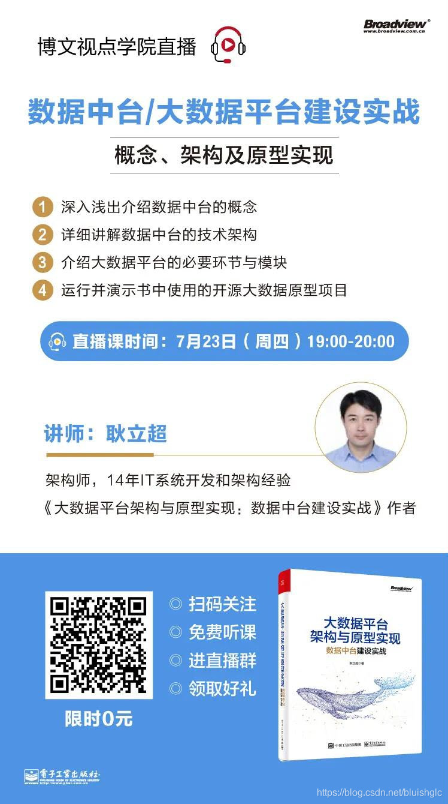

怎么走着走着就变“烟囱”了呢？| 建设数据中台系列（二）
这两年，随着中台概念的兴起，一种IT过去的常态，现在的明星反面教材——“烟囱式架构”被反复提及并为大家所熟知。作为中台的对立面，烟囱式架构不幸地成为了业界合力吐槽的“倒霉孩子”，那些对比中台理念审视过自身IT系统的传统企业都不禁心虚地喃喃自语道：“嗯，我有病，得治！”
开个玩笑，其实我们并不打算在这篇文章里对烟囱架构进行批判，“家家有本难念的经”，企业形成今天的烟囱式架构是由很多现实问题导致的，并不是什么管理或决策上的疏失，如果说烟囱式架构就是一种“病”，那么可以说“雪崩来的时候，没有一片雪花是无辜的”。
本文我们真正想做的是带着读者从一个生动而现实的案例中观察并思考烟囱式架构的产生背景，演化过程以及它所造就的IT生态给企业带来的影响。所谓“知己知彼，百战不殆”，不管企业要不要上中台，探究形成企业现有IT格局的真正动因，透彻理解烟囱生态的现实处境，对企业领导者和IT团队都是非常重要的，这可以避免一些企业在中台热潮中盲目跟风，或者帮助决策者清晰地认识到在中台化进程中它们真正需要解决的生态顽疾到底是什么。本文引用的案例源于作者所著的 《大数据平台架构与原型实现：数据中台建设实战》 一书，全书对数据中台的理念、架构和具体实现做了详细论述。 （注：本文已由CSDN云计算公众号首发）
那接下来，就让我们开始一趟名为“会员管理”的一日游吧，这是本文选取的一个极具代表性的案例，可能并非所有企业都经历过案例中的全部阶段，但我相信一定会有很多企业能从这个案例中找到自己的一些影子，这个案例可以让大家清晰地看到烟囱式生态系统是如何形成并蔓延的。
对于生产和销售面向C端产品的企业来说，如何建立并维持企业与终端消费者（也包括潜在消费者）之间的关系非常重要的，为此，企业都会建立自己的客户关系管理系统，即CRM系统来管理自己的消费者，构建 会员体系 ，提高客户满意度和用户粘性。过去，线下零售是C端产品的主要销售渠道，因此POS系统就成为了会员注册的主要入口，很多POS系统都有会员管理功能，销售人员可以在POS机上为消费者完成会员注册、积分查询与兑礼等操作，这些功能一般放置在POS的“会员管理”模块：

图1 阶段一：初期基于POS系统的会员管理
后来企业引入了CRM系统专门进行消费者信息的管理和会员体系的建设，POS的会员管理功能将让位于更加专业和强大的CRM系统，因此，在CRM的建设过程中，POS系统团队需要深度参与，配合CRM系统制定会员管理相关的数据交互协议与格式，由于项目只牵涉POS与CRM两个系统，接口方案很快可以就敲定并付诸实施，改造完成之后就形成了第二阶段的会员生态：

图2 阶段二：引入CRM系统后的会员系统生态再后来，企业又引入了客服系统，消费者除了可以在门店查询和行使 会员权益 ，还可以通过电话向客服中心查询和修改个人信息，但是客服系统围绕会员相关的功能需求与POS系统会有所不同，例如客服系统需要记录用户对产品的反馈以及收集消费者调查问卷，这些需求在之前设计POS与CRM对接时是不可能考虑到的，如果现在要实现客服系统与CRM的对接就需要对CRM系统的会员接口做出调整，为了避免改造对POS系统造成影响，CRM团队决定面向客服系统单独开发一套API，于是第三阶段的会员生态就是下面的样子：

图3 阶段三：引入客服系统后的会员系统生态
在这张图中，我们使用了梯形接口来特别表示这是有别于原来面向POS的另外一套API。
很多企业早期的会员生态大多如此，从中我们已看到了一些“烟囱”的端倪，如果放在早期的传统销售模式下看，这一生态并没有大问题，但是后来随着电子商务和移动互联网的兴起，商品的销售渠道变得越来越多，越来越复杂，这些新兴的销售渠道包括：
-
官方电商平台
-
第三方电子商务平台（天猫/淘宝/京东等）
-
品牌自有的移动端APP
-
微信小程序
-
门店导购系统
这些系统都直接与终端消费者进行交互，是会员招募的重要入口，理所当然地要提供会员注册、信息查询、权益行使等会员服务。当第一个线上系统——官方电商平台准备上线时，企业就遇到了很多困难，这些困难大多与周边 系统集成 有关，继续以“会员管理”这个模块为例，由于早期CRM的会员服务/API是面向传统线下业务场景开发的，当面对电子商务和新零售业务时它们已经不能服务于这些新业务了，于是导致新的业务系统无法融入老的会员体系：

图4 阶段四：引入官方电商平台时由于接口的复杂性和兼容性导致集成出现问题
在这个阶段，企业有两个选择：
-
对CRM系统进行大幅度地改造，使之能同时支撑线上和线下的会员管理，但是建设周期长，风险大，CRM团队无力也不愿意承担这个风险
-
让官方电商平台独立开发自己的会员管理模块，首先满足自己的会员管理需求，然后与CRM系统对接，同步会员数据，但不使用CRM的会员服务
很多企业都曾经走到过 类 似的岔路口，可能业务背景各不相同，但都是企业IT生态演化路径上的关键节点，大多数的企业为了让新业务尽快上线，规避风险，都无可奈何地选择了后者，于是会员生态进入到了第五个阶段：

图5 阶段五：经过妥协之后形成的会员系统生态
这一阶段的演变非常值得思考，从架构上讲，这是出现我们所说的“坏味道”的开始，相信读者会有对这一阶段产生很多疑问：
疑问一：为什么没有向着SOA的方向进化，或许在SOA架构下这个问题会不会比较容易处理？
首先，我们可以看到很多企业并没有经历当年的SOA浪潮，或者曾经尝试过，但最后失败了。其次，某种程度上这是一个伪命题，因为即使企业实施了SOA改造，但是在面对新业务对会员管理提出的要求时，依然要冒方案一的风险，因为对于会员服务的提炼和改造归根结底是要由CRM系统负责的，与SOA架构无关，SOA架构成功的前提就是服务本身的设计要足够好并且能不断地迭代和演化以适应新的需求，所以问题不在于系统间如何集成，而是CRM作为一个独立的系统，现在要求它承载的却是企业全部业务线上的会员管理，回到前面给出的解释，CRM团队的首要任务是保证系统的稳定运行，无力应对这种格局对CRM的冲击。
疑问二：即使没有引入SOA，也不至于退化成基于文件的交互方式，是否是技术管理上的疏失？
首先，文件传输是批量的，比API实时交互实现起来要简单的多，但更重要的原因在于通过文件传输数据时，关联数据一般会被“压平”（即将join后的结果集作为输出格式），以非常粗的粒度送出，这实际上相当于通过一个粗粒度的API传输类似宽表的数据，但是实际的API是不可能被设计为这么粗的粒度的，这样的API是不能支持实时交互的。说到底，通过文件传输扁平的粗粒度数据是最容易实现的方案，相应的实现的风险也是最小的，所以在权衡利弊之后，很多系统间的集成最后都选择了这一方案。
一旦企业度过了第五阶段，后续所有的系统都会效仿这一模式集成到IT生态里，形成如下的状态：

图6 最终成形的会员系统生态
可以说此时的IT生态已经彻底降级了，这种降级是伴随着不断增加的系统集成复杂度与无法提供足够有效的接口两者之间的矛盾而导致的，降级之后的IT生态将不可避免的存在这样一些问题：
-
会员数据将不可避免的分布于多套系统中，需要频繁和复杂的数据同步
-
由于数据同步方式是批量的，会导致在某些时间段内用户在不同渠道查询到的个人数据（例如积分）是不一致的，这会影响用户体验，更严重的是积分数据的不一致可以让“羊毛党”多次重复兑换积分，给企业带来经济损失
-
多个业务系统中开发了会员管理模块，虽然部分功能有所不同，但核心功能是一致的，这是严重的重复建设
现在我们来重新梳理一下这个案例中“会员管理生态”的演化历程：
-
早期通过POS系统实现会员管理
-
后来引入了专业的CRM系统，关闭POS系统的会员管理，转而与CRM对接，完全通过CRM来管理会员
-
出现了第二个需要获取和修改会员信息的系统：客服系统，但原有面向POS设计的API并不能很好的满足客服系统的需求，于是又协调CRM团队修改或开发了部分的API，形成了面向客服系统的会员API
-
再后来，随着电子商务的兴起，官方的电商平台上线，也需要与CRM对接实现会员注册，积分查询和管理等功能，作为新的线上渠道，会员信息、会员交易行为与线下渠道会有明显的差别，对会员积分、等级的计算规则也产生了直接的影响，这些因素导致CRM团队无力在保持现有业务不变的情况下再开发兼用电商平台的API接口了，折中的方案就是：在官方的电商平台上开发本地的会员管理模块，在本地实现会员注册、信息维护、积分计算等功能，然后周期性的和CRM系统进行数据同步
-
之后，更多的新系统都仿照了这一模式，各自在本地系统实现会员管理，然后与CRM进行数据同步，以便从其他渠道注册的会员同样可在该渠道上行使会员权利
在这个演变的过程中有一个重要的节点：第4步，这是整个生态系统演变的一个转折点，在这个转折点之前，整个IT生态还比较简单的，点对点式的对接完全可以解决问题，当IT生态变复杂时，麻烦就会逐渐突显出来了：早期面向单一业务场景设计的服务/接口无法满足来后来新生业务系统的需求，导致外围系统不得不在本地自建相关模块，为了确保全局数据一致，再通过文件进行数据同步。
关于作者：耿立超，架构师，14年IT系统开发和架构经验，对大数据、企业级应用架构、SaaS、分布式存储和领域驱动设计有丰富的实践经验，热衷函数式编程。目前负责企业数据中台的架构设计和开发工作，对Hadoop/Spark 生态系统有深入和广泛的了解，参与过Hadoop商业发行版的开发，曾带领团队建设过数个完备的企业数据平台，个人技术博客：https://laurence.enlightgram.com/
应电子工业出版社博文视点学院的邀请，我将于 7月23日（本周四）19:00 做客博文视点学院直播平台，为大家详细讲解数据中台的技术架构并分享一些建设经验！

分享内容:
-
深入浅出介绍数据中台的概念
-
详细讲解数据中台的技术架构
-
介绍大数据平台的必要环节与模块
-
运行并演示书中使用的开源大数据原型项目
怎么走着走着就变“烟囱”了呢？| 建设数据中台系列（二）
https://laurence.enlightgram.com/bigdata/data-middle-platform-2-silos/